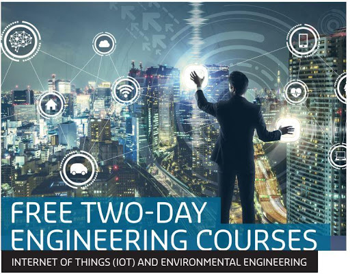
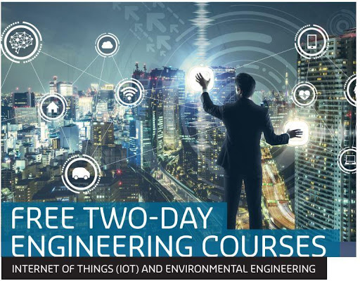

Our Objectives
It is envisaged that YTU will become a highly-prestigious technological centre of excellence in teaching and research with a strong commitment to systematically educate and train
Read More
YANGON TECHNOLOGICAL UNIVERSITY
ရန်ကုန်နည်းပညာတက္ကသိုလ်

The new Diploma Programme in Telecommunications between the University of Oulu and Yangon Technical University (YTU) was launched on 22 March 2018. The programme aims to promote the construction of a society of equal opportunities in Myanmar as well as entrepreneurship and…
Read More

It is envisaged that YTU will become a highly-prestigious technological centre of excellence in teaching and research with a strong commitment to systematically educate and train
Read More

To educate and train students systematically to become engineers, specialists and researchers who can effectively contribute to the building of a modern developed nation
Read More

when an unknown printer took a galley of type and scrambled it to make a type specimen book. It has survived not only five centuries, but also the leap into electronic typesetting,
Read More

Yangon Technological University is one of the best universities in Myanmar and only allows admissions of students who gained high marks from the matriculation examination. A student's majorized engineering field is also decided by the marks he earned through the matriculation examination. Currently, YTU possesses 12 Engineering Departments, 6 Supporting Departments, 1 Research Centre and 47 Laboratories. There are currently about 2000 students seeking knowledge and experiences at YTU. VISION It is…
Read More
 

More
Yangon Technological University is one of the best universities in Myanmar and only allows admissions of students who gained high marks from the matriculation examination. A student’s majorized engineering field is also decided by the marks he earned through the matriculation examination. Currently, YTU possesses 12 Engineering Departments, 6 Supporting Departments, 1 Research Centre and 47 Laboratories. There are currently about 2000 students seeking knowledge and experiences at YTU. Find out more about the history of YTU at …
More
DEPARTMENT PUBLISHED
PROFESSIONAL LECTURES
STUDENT ENROLLMENT

Ministry of Education Yangon Technological...

Myanmar’s first Diploma Programme in...

7th WWSPZP

Swal Daw Leaf

Rector's Collaborative Visit to University...

Training of IoT and Environmental...
More